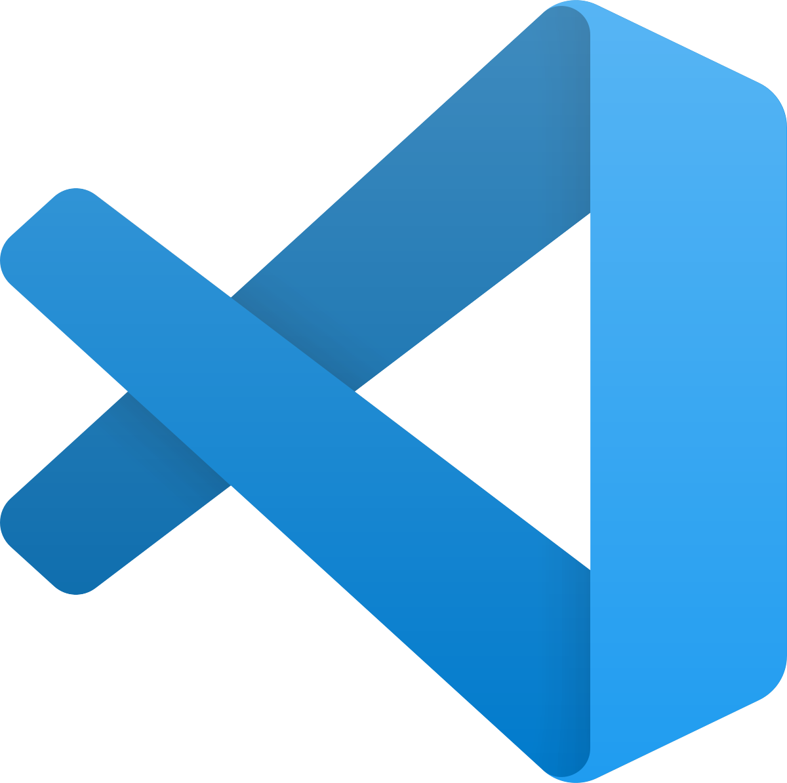
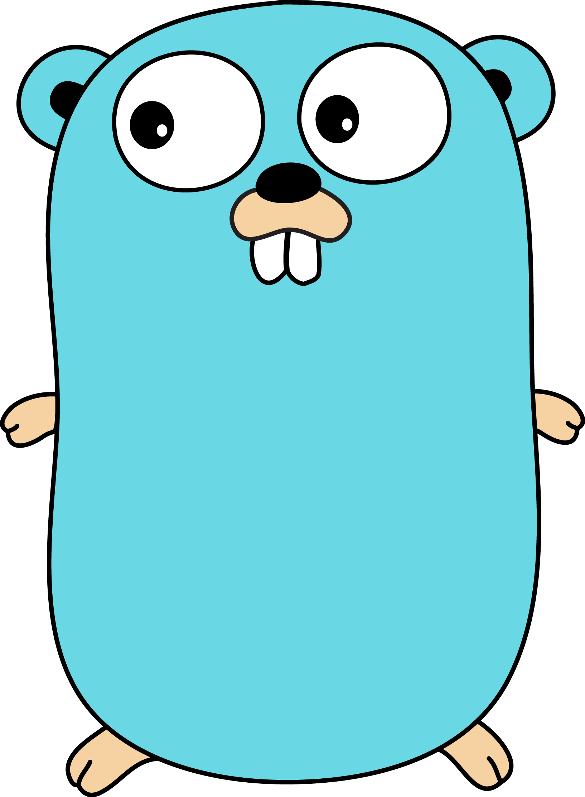

Welcome, Fall 2019 Students!
Data structures is so much of what you'll end up doing as a computer scientist. In this course, I'll be doing my best to integrate solid theory on data structures as they pertain to computer programs while also going through practical examples that will hopefully equip you to tackle real-world problems.
I strongly recommend that you bookmark this website for the duration of the course and that you visit it regularly.
See you in class,
—Professor Nadim
Kobeissi
Course Description
Organizing and managing large quantities of data using computer programs is increasingly essential to all scientific and engineering disciplines. Students learn how to design data structures for representing information in computer memory, emphasizing abstract data types and their implementation, and designing algorithms using these representations. Topics include recursion, asymptotic analysis of algorithms, lists, stacks, queues, trees, hashing, priority queues, and graph data structures.
This course is taught using Java programming language, and assumes that students have had at least one semester course in Java programming language (Introduction to Computer Science course). All programming assignments are given in Java and students need to be able to write fairly involved programs from the very first project.
In addition to Java, many course materials will also be provided in the Go programming language. Any usage of Go is optional.
Course Goals
Upon completion of this course, students will have a strong understanding of:
- Java features: abstract classes, interfaces, inheritance, polymorphism, generics, iterators, exception handling, file I/O.
- Core concepts: recursion, worst case asymptotic running time analysis, abstract data types, lists, stacks and queues, trees (binary and binary search trees, AVL trees), sorting algorithms, hashing and hash tables, and priority queues.
Prerequisites
Passing CSCI-UA.0101 with a grade of C or better. You are expected to know and remember the material from CSCI-UA.0101 course. If you took the course a few semesters ago and/or do not remember parts of the material, start reviewing it during the summer/winter break. If you took an equivalent of this course at a different school, you need to make sure that you are familiar with Java. We assume you know enough Java to write fairly large programs right at the beginning of the semester.
Administrative Links
- Instructor: Professor Nadim Kobeissi (nk76@nyu.edu)
- Lectures: Tuesdays and Thursdays, 5:45pm to 7:00pm. Room 4.11.
- Recitations: Thursdays, 7:15pm to 8:45pm. Room 4.11.
- Term Dates: September 2, 2019 until December 13, 2019.
- Office Hours: Email me to make an appointment.
- Online Resources: Mailing List.
Syllabus and Course Schedule
→ A PDF copy of the Fall 2019 syllabus is available.
Part 1: Java Topics
Data Structures and Algorithms in Java, Chapters 1, 2
- 1.1: Documentation, Conventions
- 1.2: Inheritance, Polymorphism
Part 2: Abstract Data Types
Data Structures and Algorithms in Java, Chapter 3
- 2.1: List Abstract Data Types
- 2.2: Array-Based Implementation of List ADTs
- 2.3: Reference-Based Implementation of List ADTs
- 2.4: Linked Lists: Code Examples
Part 3: Recursion
Data Structures and Algorithms in Java, Chapter 5
- 3.1: Recursion: Definition, Base Case, Recursive Case
- 3.2: More on Recursion
- 3.3: Advanced Recursion with Backtracking
- 3.4: Midterm Exam Review
- Midterm Exam
Part 4: Stack and Queue ADTs
Data Structures and Algorithms in Java, Chapters 4, 6
- 4.1: Algorithmic Performance Analysis (Big O Notation)
- 4.2: Stack ADTs, Array and Reference-Based Implementation (slides available after class)
- 4.3: Queue ADTs, Array and Reference-Based Implementation (slides available after class)
Part 5: Trees
Data Structures and Algorithms in Java, Chapters 8, 11.1, 11.2, 11.3
- 5.1: Introduction to Trees
- 5.2: Binary Trees, Tree Traversal
- 5.3: Binary Search Trees: Algorithms and Implementations
- 5.4: Binary Search Trees: Removing an Element
- 5.5: Adelson-Velsky and Landis (AVL) Binary Search Trees
- 5.6: Caring for Your Binary Search Tree
Part 6: Sorting
Data Structures and Algorithms in Java, Chapters 12.1, 12.2, 9, 9.4, 10.1, 10.2
- 6.1: Quick Sort (slides available after class)
- 6.2: Priority Queues and Heaps
- 6.3: Use of Heaps for Sorting
- 6.4: Hash Tables
- 6.5: Final Exam Review
- Final Exam
Materials
Every lecture will be accompanied by outside readings that expand on what is discussed in class or present the same material in a different way. Neither the readings nor the lectures are a replacement for each other; deeply understanding the material will likely require attendance as well as reading. It is possible to read before or after class, depending on your learning style.
Aside from the textbooks and materials, students will also require their own personal computer for various parts of this course. Windows, Linux and Mac computers are all suitable.
Textbooks
-
Data
Structures and Algorithms in Java,
6th Edition, International Student Version. Wiley, 2014.
ISBN: 978-1-118-80857-3.
- Michael T. Goodrich, Roberto Tamassia, Michael H. Goldwasser.
- Required. Pick up a copy from the NYU bookstore.
-
OpenDSA,
free online reference.
- Open source course materials for a wide range of Data Structures and Algorithms courses.
- Optional. Probably good for perusal.
-
GoDS,
free online reference.
- Free online introduction to data structures in Go.
- Optional. Probably good for perusal.
Development Environment

All students are required to download and install Visual Studio Code, a free code
editor and programming environment for Windows, Linux and
Mac computers. You will also need to download and install a
Java Development Kit (JDK) and to configure Visual Studio
Code to use your JDK (see Writing Java with Visual Studio
Code.)
It is mandatory that you be able to run a simple Java
"Hello World" program on your computer before the
first class session.
 In addition to Java, many course materials will also be provided in the Go programming language. Any usage of Go is optional. You can install Go from the Golang.org website. For help with configuring Visual Studio Code for Go development, check out Go with Visual Studio Code.
Interactive Learning Tools
- A Tour of Go: Interactive Go programming tutorial.
- Go By Example: Great way to learn Go.
Assignments
Problem Sets are scheduled evenly throughout the course to help you assess your understanding of the material thus far. Recitations give you a hands-on, guided practical experience with the course material.
Academic Honesty
At NYU, a commitment to excellence, fairness, honesty, and respect within and outside the classroom is essential to maintaining the integrity of our community. Plagiarism is defined as presenting others' work without adequate acknowledgement of its source, as though it were one’s own. Plagiarism is a form of fraud. We all stand on the shoulders of others, and we must give credit to the creators of the works that we incorporate into products that we call our own. Some examples of plagiarism:
- A sequence of words incorporated without quotation marks or an unacknowledged passage paraphrased from another's work.
- The use of ideas, sound recordings, computer data or images created by others as though it were one’s own.
- Submitting evaluations of group members’ work for an assigned group project which misrepresent the work that was performed by another group member.
- Altering or forging academic documents, including but not limited to admissions materials, academic records, grade reports, add/drop forms, course registration forms, etc.
Furthermore, my courses have a zero tolerance policy for cheating. Any instance of cheating will result in an immediate, non-negotiable grade of 0 on the pertinent assignment and a report to the university faculty:
- Your code has to be your own. No copying code (or rewriting it line by line based on someone else's code) will be tolerated.
- Any sharing of any answers on any assignment is considered cheating.
- Coaching another student by helping them writing their answers line by line is also cheating.
- Copying answers or code from the Internet or hiring someone to write your answers for you is cheating.
Explaining how to use systems or tools and helping others with high-level design issues is not cheating.
For further information, students are encouraged to check NYU's Academic Integrity Policy.